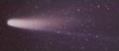
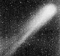
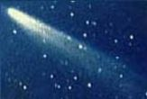

О проекте
Основные сведения о Солнечной системе
Планеты
Солнечной системы
Остальные космические тела Солнечной системы
Солнце
Виртуальный тур по вселенной
Законы Кеплера - законы движения планет
Вселенная. А что дальше?
Вместо заключения
Ссылки
|
Здесь мы кратно расскажем об остальных телах Солнечной системы (и
Вселенной, ведь Солнечная система является частью Вселенной).
Черные дыры.
Наверное, черные дыры - космические тела, которые привлекают
к себе не меньше внимания, чем поиски планеты, подобной по условиям
Земле. В связи с этим авторы решили, что рассмотреть черные дыры
просто необходимо.
Сначала обратимся к определению черных дыр. Во Вселенной имеются небесные тела
на поверхности которых существует огромноая сила тяжести. К ним относятся
и черные звезды, притяжение которых так велико, что они не отпускают от себя
даже собственный свет. Следовательно, они не светятся, оставаясь при
этом черными. Итак, черная дыра - это место, где сосредоточена огромная масса
вещества (или сжатя в очень ограниченном объеме).
Черные дыры "растут", как сорняки, в космосе: в центре каждой галактики
имеется громадная черная дыра. Из-за особенностей черной дыры (см. выше)
ее, разумеется, нельзя увидеть, а можно лишь определить ее местоположение
(что и сделал космический телескоп им.Хаббла, вычислив скорость газового
облака, вращающегося вокруг центра галактики; по этим числам можно определить
массу центральной области. Результат - такая черная дыра сопоставима по
массе с 3-5 млрд солнц!!!). Кроме того, ежегодно черные дыры поглощают
эквивалентное 1 млн солнц количество раскаленного газа.
Что касается галактик, то можно сказать что галактики сами формируют друг
друга: одни галактики пожирают другие, из уплотняющегося газа зарождаются
новые звезды и т.д.
Кометы
Кометы - космические тела, хвостатые звезды. Это небольшие, размером
до нескольких километров, глыбы изо льда, пыли, камня, аммиака и метана;
походят на снежки. По законам Кеплера кометы движутся по эллиптическим
орбитам. Но их орбиты более вытянутые, иногда уходят дальше орбиты Плутона.
Причем в этом отдаленном пространстве нашей Солнечной системы обитают
миллиарды планет, 1-2 из которых ежегодно появляются вблизи нас.
Комета, приближаясь к Солнцу становится видна, приобретая при этом
"голову" и "хвост", которые формируются из газа, составляющего комету.

Большинство комет появляется только раз, исчезая после навсегда в глубины
Солнечной системы, туда, откуда они пришли. Но существуют и кометы
периодические.
Астероиды
Астероиды - или так называемые "малые планеты". Известно, что их
количество составляет многие тысячи (в пределах нашей Солнечной
системы).
В основном астероиды располагаются между Марсом и Юпитером. Когда-то
Юпитер "разогнал" эти космические тела, и теперь астероиды не так часто
сталкиваются, не образуя планеты. Но все же когла астероиды сталкиваются,
их фрагменты могут долететь до Земли, в атмосфере которой они уже
становятся метеорами, а при падении на поверхность планеты или в воду -
метеоритами. Ясно, что, падая, астероиды могут вызывать бедствия на
Земле.
Астероиды - сравнительно небольшие тела, состоящие преимущетвенно из
камня и железа. Причем они делятся на 2 группы: "светлые" и "темные"
астероиды. "Светлые" астероиды легче "темных". Понятно, что "темные"
астероиды тяжелее.
Существует предположение, что астероиды раньше (где-то около
4,7 млрд лет назад) имели металлическое ядро,
средний слой из камня железа и камня и поверхность из камня. Но сталкиваясь,
они распадались. Сегодня же астероиды классифицируются на:
металлические, каменно-металлические и каменные.
Откуда появились эти космические тела?
1 версия - это остатки существовавшей
когда-то между Марсом и Юпитером планеты;
2 версия - вероятнее, это остатки
от процесса формирования планет.
|